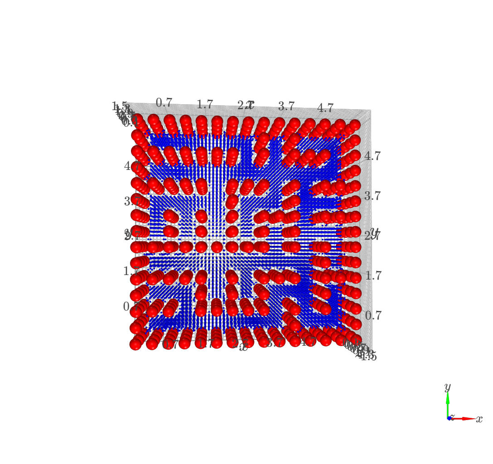
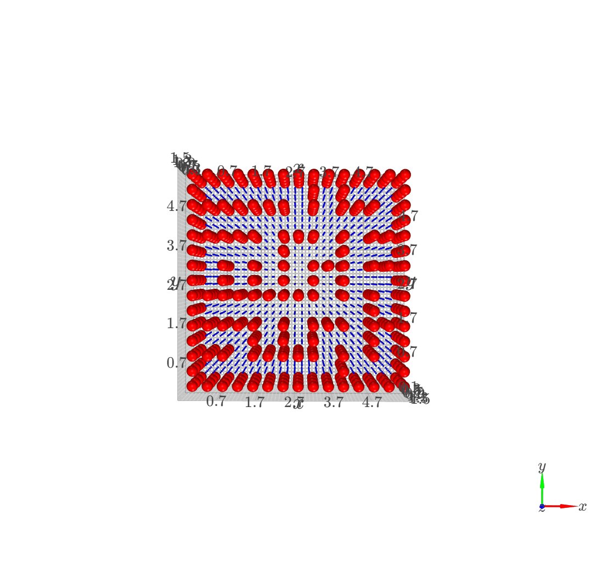

Path planning with a drone in PyGym using Dijkstra
This project was done for the course Planning and Decision Making for the Robotics Master. This project consisted of creating a global planner for which a quadrotor could safely manouver around different environments in the pybullet simulation. The aspects I focused on were creating the Dijkstra global planner as well as implementing it in the simulation.

Below are the steps which I was involved in to achieve such results:
Dijkstra Implementation
There are several steps that were taken to implement Dijkstra into each environment. First a grid was done with a specific spacing which determines how fine or corse the gird should be. For each node in the grid it verifies if the node is inside the predefined bounds and if it is not inside an obstacle.
def filter_grid(XYZ):
indices_to_remove = []
for i, point in enumerate(XYZ):
if (X_BOUNDS[0] <= point[0] <= X_BOUNDS[1]) and (Y_BOUNDS[0] <= point[1] <= Y_BOUNDS[1]) and (Z_BOUNDS[0] <= point[2] <= Z_BOUNDS[1]):
if not euclideanDistance(point):
indices_to_remove.append(i)
else:
indices_to_remove.append(i)
filtered_XYZ = np.delete(XYZ, indices_to_remove, axis=0)
return filtered_XYZHere are two examples of a finer grid and a more coarse grid:

